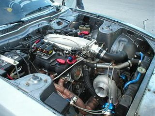

-
AaIt's been a while since I've looked around on here so before I engage my local fabricator, is anyone still doing the custom plenums? Particularly the tapered log style.
Sorry if in wrong section, using mobile deviceLast edited by 300zxt; 10-01-2016, 09:07 PM. -
That looks great. What size throttle body is that? What kind of price are you looking to sell the plenum for?shotyme -
What size shot of NOS are you shooting? Your set up looks great. What is the estimated hp level you have and capable of.shotyme -
Are you asking if anyone builds them?
It's easy enough to prep your own using a intercooler end tank granted you have the tooling, i built one for $4XX USD https://z31performance.com/forum/z31…mad-max-intake
LMK if you have any questions -
It isn't mine. I'm looking to buy one like that, not sell one! LolOriginally posted by darryl rice View Post -
I don't mind that but need to be able to shut the hood without cutting.Originally posted by 88sinZ View Post -
is it due to need or want?
There's not much clearance to lower the engine, so you'd have to considered using oval piping or trapezoid style - adding to the complexity of a tapered design.
From the lower flange surface to highest point of forward elbow is maybe 4.5-4.75", hood skeleton will limit by another 0.5" or so. it's a tight fit if you want a fwd facing intake. -
Yeah I think you've done a good job fitting that. The factory gutted plenum will probably meet my needs but I'm just aiming to shorten the piping and get rid of that elbow.
I just recall SATAN used to fabricate these, unsure if they cleared the hood however. Ideally the one pictured above however looks to be a bit narrowly tapered towards the rear cylinders. -
I made my own, not terribly pretty, but can be done with no more tools than a piece of aluminum plate and a welder, click the link below to my build thread and it will show you what I did…My Build Thread…Last edited by mtherkamp; 10-03-2016, 08:25 AM.Butter (credit where credit is due): "You have this "gift" where you can make cooking a Hot Pocket seem like you need a certain wavelength microwave and involve brown mustard."

Copyright © 2006–. All rights reserved. Privacy Policy